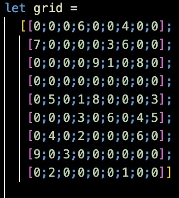
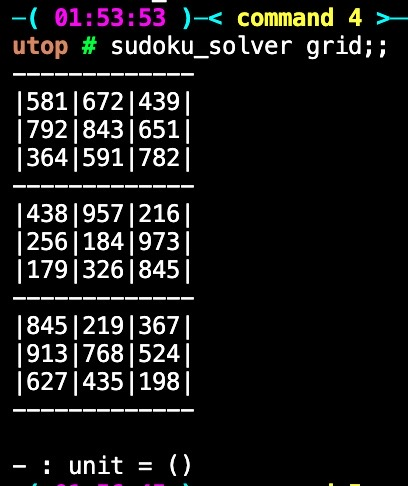
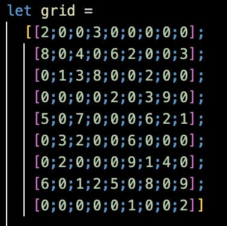
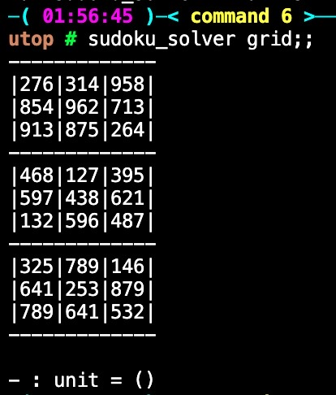

During the fall semester of 2022, I took a University class called "Programming Lang & Paradigms" which mainly focused on functional programming. During the semester, we used Ocaml as the coding language and learned many new topics like higher-order functions, continuations, type inference, evaluation, etc...
I honnestly really enjoyed coding in Ocaml so I decided to implement the classic (java/python) sudoku solver in Ocaml, from scratch, using what I learned from this class.
I run the code on utop, all the explanations are on the Github repository.
Here are some difficult problems I found on the internet, one of which being listed as one of the highest rated puzzle. The problems are on the left and the solutions are on the right.
After setting utop, there will already be a 9x9 grid available. This grid can be set to any problem. just note that the number 0 means that the cell is empty.
anddddd..... tada!!!
First Sudoku
 Second Sudoku
 As we can see the outputed solution matches exactly the website solution :))